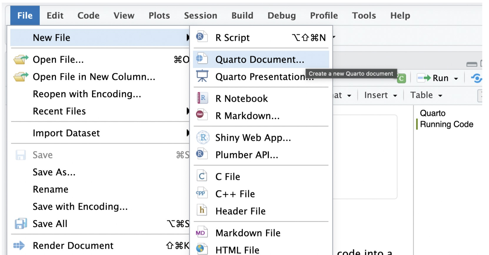
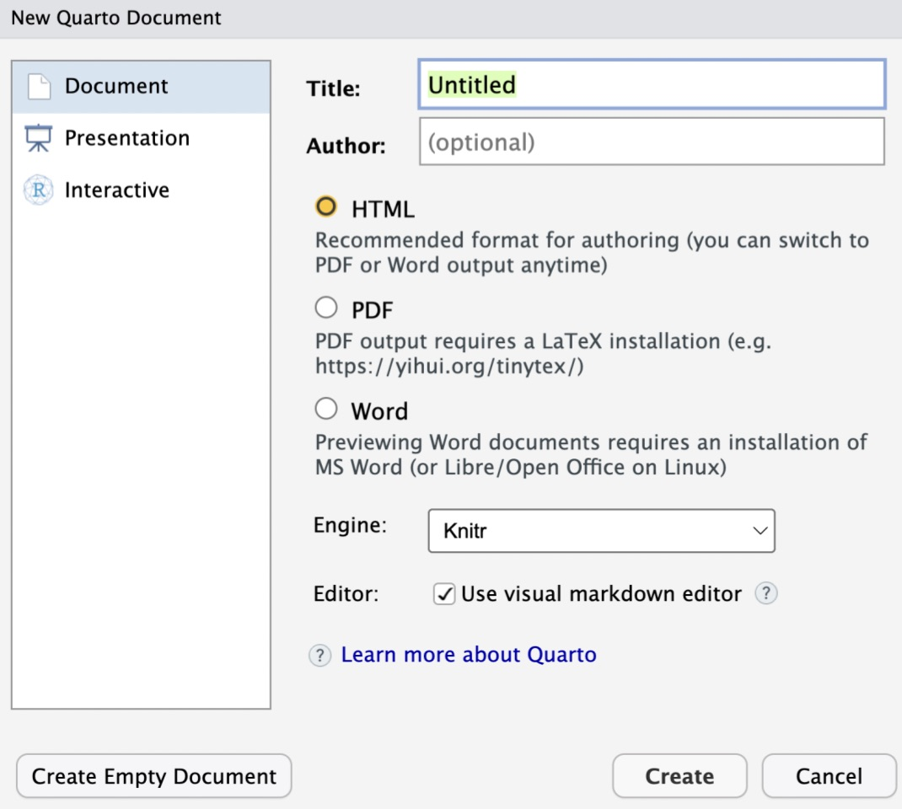
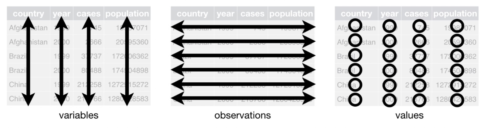

Code
data("nycflights")In today’s lab, we introduce an interface known as quarto that is helpful in creating reproducible reports. Reproducible reports seamlessly integrate code and narrative within the same document in order to allow others to easily replicate your results by running the embedded code.
Quarto documents can be set up to produce (render) reports in various formats including pdf, html, MS Word, among others.
Note: If you are using the desktop version of quarto, you will need to download quarto from https://quarto.org/docs/get-started/ before you proceed.
In today’s lab, we will need the openintro and tidyverse packages. You should have these packages already but in case you don’t, you will need to install them first. To install a package run the command below in the console. Replace the package_name with the name of the package you want to install.
install.packages("package_name")An alternative way to install a package in RStudio is to use the install button in the packages tab.
To create your First Quarto file, follow the following steps:
Go to File>New File > Quarto document. See below:

After clicking Quarto document,a pop up window will appear with fields for the title and author. Enter the title of the document as Introducing Quarto and Data Wrangling because that is what we are doing today.
Write your name in the author field. The output format can stay as HTML. You can always change these options even after creating the document. The popup window looks as follows:

Click create to create the document. Note that the document appears with the name Untitled. Click on file then navigate to save then change the name to Lab_02. Remember, we do not want to use a space for the document name. Click on save. Your document should appear under the files section with the name Lab_02.qmd (notice that you do not type the .qmd part, it automatically comes). With this document saved here, you can always return to it any time and continue working.
When you look at the body of the document, you will note that the it has both plain text and some code chunks. Anything that you want interpreted as code goes into the code chunks. Otherwise, you can use the white space outside code chunks. Note, however, that you can still comment out stuff that you do not want to run as code inside code chunks using the hash tag.
To add your own code chunk at a given location in the document, place the cursor these, then click on code then go to add new chunk. Alternatively, use the keyboard shortcut cmd+opt+I on a MacOS and control+opt+I on Windows PCs.
By default, the code chunks are for R code. Quarto supports other languages such as python, and julia. To use other languages, verify that it is supported, then change the r to python (you may have to click on source to see the architecture of code chunks.
When you are ready to generate your report, you click on the render button. Put this to the test by clicking on the render button. Study the report. If you want any changes, you make them in the source file (quarto), then click on render to see the results. It takes a while to become good with editing quarto documents, but most of that stuff is easily found online.
When you render a quarto document, quarto outputs your report by running all code chunks sequentially from top to bottom. All operations in code chunks should be laid out in the right order. For example, if operation A must run before operation B, the code chunk in which operation A runs should come before the code chunk in which operation B runs.
Operations such as installing packages that should be done only in the console. If any code chunk has code for package installation, quarto will try to install the package every time you render the document (imagine if you had to install TikTok on your phone evry time you needed to use it!!).
Operations such as activating (waking up) packages, i.e., library(package name), can be included in the code chunks.
The tidyverse is a collection of open-source R packages that help with data manipulation, exploration, and visualization. In the first lab, our code was mostly base R (not Tidyverse). In this lab, you be introduced to the tidyverse as a framework for working with data structures in R. Although we will use Tidyverse for most of this lab and future labs, there are certain commands that are easier to do in base R. So, expect to see both Tidyverse and base R code from time to time.
The top portion of your quarto file (between the three dashed lines) is called YAML. It stands for “YAML Ain’t Markup Language”. It is a human friendly data representation for all programming languages. All you need to know is that this area is called the YAML (we will refer to it as such) and that it contains meta information about your document.
We will use the first code chunk to load (activate) any packages that are needed for a specific quarto document. For example, to day, we will need the following packages: openintro and tidyverse. Copy and paste the following code in the first code chunk:
library(openintro)
library(tidyverse)Run the code chunk with the packages to ensure that they are all working. If any of them is missing, R will prompt you to install them. Go ahead and do so.
There are several ways to load data into a quarto document. Today, we will explore the first way - loading data stored in a package (openintro to be specific). Remember that the openintro package contains the data that comes with the openintro text. To view a complete list of the data frames in openintro, visit the site https://www.openintro.org/data/. Today, we will use a data frame called nycflights contained in the openintro package. To load this data into your work space, you will use the following command after running the packages.
To learn more about this data frame, run the following code in the nycflights:
data(nycflights)data("nycflights")When you run the above code, a new object should appear in the environment area. Click on penguins to view and study the data.
To learn more about this data frame, you can run the command ?nycflights in the console. It is very important that you do this.
The creators of the tidyverse noted that it is “an opionated collection of R packages designed for data science.” It’s a suite of packages designed with a consistent philosophy and aesthetic. This is nice because all of the packages are designed to work well together, providing a consistent framework to do many of the most common tasks in R, including, but not limited to…
dplyr)tidyr)ggplot)stringr)It is important to note that tidyverse functions are designed to be like grammar for their tasks, so we’ll be using functions that are named as verbs to discuss the tidyverse. The idea is that you can string these grammatical elements together to form more complex statements, just like with language.
In lab_01, we performed the analyses using base R code. We saw that to compute the mean of a given variable in a data frame, you use data_frame_name$variable_name.
For example, to compute the mean of the variable hour in the nycflights data, you would write your code as follows:
mean(nycflights$hour)In the tidyverse, the code for the mean of the bill length would be
nyflights %>%
summarize(avg = mean(hour))The symbol %>% is called a pipe and is very common in tidyverse. It takes anything on its left and sends it (pipes it) to the function on the right. Here, we are taking the nycflights data frame and piping it into the summarize function (the function for summary statistics). Inside the function, we specify the variable and the statistic (in this case the mean). We have chosen to name the output as avg but this could be changed.
You can compute other summary statistics in a similar manner as above and if there is an NA one way to deal with would be to remove it. In some cases, one would replace NA with the average of the other values.
Data wrangling, broadly speaking, means getting your data into a useful form for visualizing and modelling it. Hadley Wickham, who has developed a lot of the tidyverse, conceptualizes the main steps involved in data wrangling as follows:
Data is considered tidy if
The figure below illustrate the idea of tidy data:

If your data is not already in tidy format when you import it, you can use functions from the tidyR package, e.g. gather() and spread(), to “reshape” your data to get it into tidy format.
Today we are going to look at the following important functions: select(), mutate(), filter(), arrange(), group_by(), and drop_na().
The select function is used to select specific variables (columns) from a larger data set.
The nycflights data frame has many variables. Suppose we are interested in the variables carrier, origin, arrival delay, and destination only. We achieve this as follows:
nycflights_a <- nycflights %>%
select (carrier, arr_delay, dest, origin)Note:
nycflights_a appears in the environment area when you run the above code.The mutate function alters (mutates) an existing variable in some way and creates a new column(variable) with a name that you designate. Suppose you want to create a new variable called converts the arrival delay to hours (note that it is provided in minutes). You can run the following code:
nycflights_b <- nycflights %>%
mutate (arr_delay_hr = arr_delay/60)Note:
origin.Just like we can select certain variables (columns) from a data set, it is possible to filter a certain rows (cases/observations) in a data set.
Suppose you have you interested in flights that originated from JFK only. You can achieve this by using the filter function as follows:
nycflights_c <- nycflights %>%
filter (origin == "JFK")Group_by is a special kind of filtering that is commonly used alongside a summarize() function. For example, suppose you want to compute the average arrival delay by airport. To do this, you first use the group_by function to group the cases by origin, then run the summarize function and call the mean. See code below:
nycflights %>%
group_by (origin) %>%
summarize(avg_arr_delay=mean(arr_delay))# A tibble: 3 × 2
origin avg_arr_delay
<chr> <dbl>
1 EWR 9.33
2 JFK 5.98
3 LGA 5.71Here, you can see the delay times by origin airport.
Some statistics may not be computed with if the variable of interest has missing values (these appear as na in R). In such cases, it might be necessary to drop missing values before moving forward with your analysis. To drop missing values from a given column (variable), you use the drop_na() function as shown below:
name_of_your_choice <- original_data %>%
drop_na(variable_name)If you want to drop_na from multiple variables, you simply list the variables in the drop_na function separated by commas.
Answer the following exercises. Be sure to show/explain your work on each question. You can copy and paste each question into the quarto document that you will submit. Have the code chunks below each question that requires code.
(4 pts) Create a new quarto document with the title “Basic Data Wrangling”. Save the document as Lab_02_Exe. Delete everything on the page EXCEPT the YAML section. In the YAML area change the output format to pdf, and make sure your name is written under author.
(4 pts) Create a code chunk and load the packages openintro and tidyverse. Run these packages to make sure they are properly loaded. Next, create a new code chunk and load the a data set called ames (this is contained in the openintro package). How many variables and how many observations/cases does this data fame have?
(4 pts) Examine the detailed documentation of this dataset by clicking on the link https://jse.amstat.org/v19n3/decock/DataDocumentation.txt. What does the variable Bsmt.Qual measure? Be sure to provide information on each level/value of this variable.
(2 pts) Create a new data set and save it as ames_new. This new data set should have the variables price, Bsmt.Qual, and Lot.Shape only.
(2 pts) Determine the number of cases in the ames_new data frame that have the value Gd for the variable Bsmt.Qual. To do this, you may use the filter() function.
(6 pts) Use the group_by() function to create a summary table that shows the average house prices by lot shape (Lot.Shape). What can you comment based on this result?